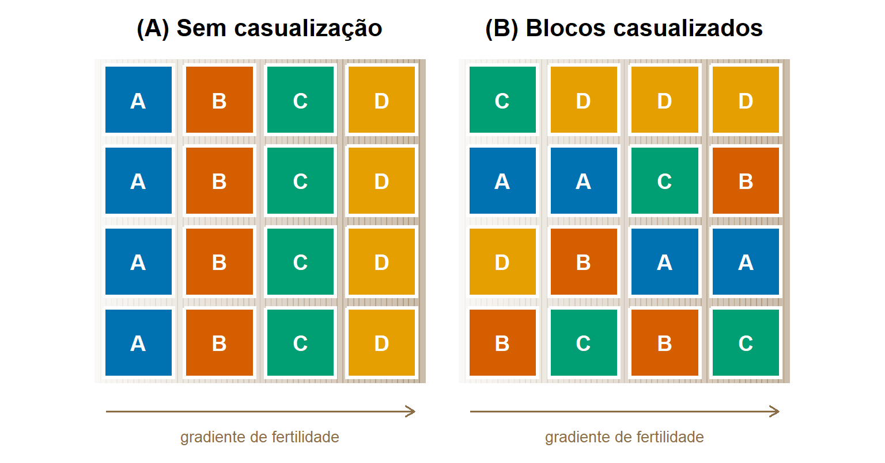

2 Como delinear um estudo?
2.1 Objetivos de aprendizagem
Importante
Ao concluir este capítulo, o leitor deverá ser capaz de:
- explicar por que o delineamento do estudo determina a força da evidência científica;
- distinguir estudos observacionais de estudos experimentais;
- traduzir uma questão biológica em uma hipótese científica e em predições testáveis;
- identificar fatores, tratamentos, variáveis resposta, unidades experimentais e unidades amostrais;
- explicar os papéis da repetição, da casualização e do bloqueamento;
- distinguir a repetição dentro de um experimento da repetição do experimento;
- reconhecer pseudorrepetição, confundimento, ausência de testemunhas e outros problemas comuns de delineamento;
- avaliar criticamente o delineamento de estudos em Fitopatologia.
2.2 Por que o delineamento importa
A qualidade da evidência científica é determinada muito antes do início da análise de dados. Ela é determinada quando a questão biológica é formulada, quando os tratamentos ou grupos são definidos, quando as unidades experimentais são escolhidas, quando a repetição e a casualização são planejadas e quando as medidas são selecionadas. A análise estatística é essencial para quantificar padrões e incertezas, mas não consegue criar evidência confiável se o estudo não foi delineado para produzi-la.
Esse ponto é particularmente importante na Fitopatologia, porque muitos estudos envolvem sistemas biológicos complexos. O desenvolvimento da doença depende do hospedeiro, do patógeno, do ambiente e das práticas de manejo. Esses fatores variam entre plantas, parcelas, lavouras, casas de vegetação, laboratórios, safras e regiões. Se essa variação não for considerada no delineamento, pode se tornar impossível determinar se as diferenças observadas são causadas pelo fator de interesse ou por fontes de variação não controladas.
Por exemplo, suponha que um pesquisador queira avaliar se um fungicida reduz a severidade da doença. Se as parcelas tratadas forem colocadas em uma parte da lavoura e as não tratadas em outra, o efeito do tratamento pode ficar confundido com um gradiente de solo, diferenças de umidade, pressão de inóculo ou desenvolvimento do dossel. Mesmo que a análise produza um valor-P pequeno, a conclusão continua fraca, porque o delineamento não permite separar o efeito do fungicida de outras diferenças no campo.
Da mesma forma, em um experimento em casa de vegetação, se todas as plantas de um tratamento forem colocadas em uma bancada e todas as de outro tratamento em outra bancada, os efeitos dos tratamentos podem ficar confundidos com diferenças de luz, temperatura, umidade ou circulação de ar entre as bancadas. Em um experimento em câmara de crescimento, se cada temperatura for representada por uma única câmara, o efeito da temperatura não pode ser separado do efeito da câmara. Em um experimento de laboratório, se muitos esporos ou colônias forem medidos na mesma placa de Petri, essas medidas não representam necessariamente repetições independentes, se a placa for a unidade à qual o tratamento foi aplicado.
Esses exemplos ilustram um princípio central: a análise estatística não compensa um estudo mal delineado. Um modelo mais complexo, uma transformação diferente ou um teste mais sofisticado não conseguem reparar completamente problemas como confundimento, ausência de repetição verdadeira, unidades experimentais mal definidas, alocação tendenciosa dos tratamentos ou medidas inadequadas. Nesses casos, a fragilidade não é apenas analítica; ela está embutida na forma como a evidência foi produzida.
Importante
A análise estatística pode quantificar a incerteza, mas não pode salvar um estudo sem delineamento adequado, sem unidades experimentais válidas ou sem repetição verdadeira.
2.3 Da questão biológica ao estudo
2.3.1 Questões biológicas
Uma questão biológica expressa o que o pesquisador quer compreender sobre um patossistema. Ela pode surgir de observações de campo, de estudos anteriores, de resultados experimentais inesperados ou de problemas práticos de manejo. Nessa etapa, a questão deve ser formulada em termos biológicos, e não estatísticos.
Por exemplo, um pesquisador pode perguntar:
- Por que a doença causa mais danos em algumas lavouras do que em outras?
- Um fungicida reduz a severidade da doença?
- Uma prática cultural reduz o inóculo inicial?
- Algumas cultivares são menos suscetíveis do que outras?
- A temperatura influencia a infecção?
- A infecção pelo patógeno altera a fisiologia da planta?
Essas questões diferem em escopo, mas todas identificam um fenômeno biológico que exige explicação ou avaliação. Algumas tratam de causas; outras, de comparações, relações, mecanismos ou consequências. Uma boa questão biológica deve ser ampla o suficiente para ter relevância científica, mas específica o suficiente para orientar o estudo.
Por exemplo, a questão: O manejo da doença funciona? é ampla demais. Uma versão mais útil seria: A aplicação de fungicida reduz a incidência de brusone do trigo em condições de campo? A questão revisada identifica a intervenção, a doença, a resposta de interesse e o contexto do estudo. Ela também começa a sugerir o tipo de estudo necessário.
Da mesma forma, a questão: O clima afeta a doença? é biologicamente relevante, mas genérica demais. Uma questão mais precisa seria: Como a temperatura e a duração do molhamento foliar influenciam a infecção por um patógeno foliar? Essa versão identifica duas variáveis ambientais e as relaciona a um processo biológico específico: a infecção.
Dica
Uma questão biológica útil deixa claro qual sistema está sendo estudado, qual resposta interessa e qual comparação, relação ou mecanismo motiva o estudo.
2.3.2 Hipóteses científicas
Uma hipótese científica é uma expectativa ou explicação com fundamento biológico. Ela propõe uma resposta possível à questão biológica e fornece o raciocínio que liga a questão às observações esperadas.
| Questão biológica | Hipótese científica |
|---|---|
| Um fungicida reduz a severidade da doença? | Plantas tratadas com fungicida desenvolverão menos doença porque o produto suprime a infecção ou a colonização pelo patógeno. |
| As cultivares diferem em resistência? | As cultivares diferem em resistência porque variam em características que limitam o estabelecimento do patógeno, a colonização ou o desenvolvimento de sintomas. |
| A temperatura influencia a infecção? | A eficiência de infecção aumenta dentro de uma faixa favorável de temperatura e diminui quando a temperatura está baixa ou alta demais para o desenvolvimento do patógeno. |
| A infecção altera a fisiologia da planta? | Plantas infectadas apresentam menor atividade fotossintética porque a colonização pelo patógeno danifica o tecido foliar e perturba o metabolismo do hospedeiro. |
Uma hipótese científica é diferente de uma hipótese estatística. A hipótese científica é expressa em linguagem biológica e está ligada a mecanismos, processos ou efeitos esperados. Uma hipótese estatística, como a hipótese nula, é um enunciado analítico formal usado mais tarde para avaliar a evidência dos dados.
Por exemplo, a hipótese científica: A aplicação de fungicida reduz a severidade da doença. pode ser representada estatisticamente como uma comparação entre a severidade média das parcelas tratadas e não tratadas. No entanto, a hipótese estatística não é a ideia científica em si. É apenas uma forma de avaliar a evidência relacionada a essa ideia.
Vale notar que as hipóteses científicas pertencem ao raciocínio biológico do estudo, enquanto as hipóteses estatísticas pertencem ao arcabouço analítico usado para avaliar a evidência. Essa distinção é importante porque um estudo pode produzir evidência biológica útil mesmo quando o teste estatístico não é o componente central da investigação. No primeiro relato de uma doença, por exemplo, a hipótese diz respeito à identidade e à patogenicidade do organismo causal. A evidência pode vir de sintomas, isolamento, morfologia, sequências de DNA, análise filogenética, testes de patogenicidade e reisolamento. A lógica é biológica, mesmo quando alguns componentes são quantitativos.
DicaFalseabilidade
Uma característica importante de uma boa hipótese é a falseabilidade. Uma hipótese é falseável quando faz predições que, em princípio, poderiam ser contrariadas pelas evidências. Por exemplo, a hipótese de que “um fungicida reduz a severidade da doença em condições de campo” pode ser testada comparando parcelas tratadas e não tratadas. Se as parcelas tratadas não apresentarem menor severidade em condições experimentais adequadas, a hipótese não é sustentada. Falseabilidade não significa que a hipótese seja falsa; significa que a hipótese é científica porque se expõe à possível contradição pelos dados. Nesse sentido, hipóteses não são meras declarações de crença. São expectativas estruturadas que ajudam os pesquisadores a delinear estudos, coletar dados relevantes e avaliar se as observações sustentam ou contestam uma explicação biológica.
2.3.3 Predições testáveis
Uma hipótese torna-se útil para delinear um estudo quando é traduzida em predições: enunciados sobre o que deveria ser observado, sob condições especificadas, se a hipótese estiver correta. As predições ligam a explicação geral aos dados específicos que o estudo vai produzir.
Por exemplo, a hipótese de que um fungicida reduz a doença porque suprime a infecção leva a predições como:
- parcelas pulverizadas com o fungicida terão menor severidade do que parcelas não tratadas nas mesmas condições;
- a diferença será maior quando a pressão da doença for alta do que quando for baixa;
- o efeito será mais forte quando o fungicida for aplicado antes da infecção do que após o aparecimento dos sintomas.
Cada predição especifica uma comparação e as condições em que ela deve se verificar. A primeira sugere um ensaio de campo com parcelas tratadas e não tratadas; a segunda, repetir o ensaio em ambientes com diferentes pressões de doença; a terceira, comparar épocas de aplicação. Assim, as predições orientam a escolha de tratamentos, testemunhas, condições e medidas.
Uma predição útil também especifica o que contaria como evidência contra a hipótese. Se parcelas tratadas e não tratadas apresentarem severidade semelhante em uma safra de alta pressão de doença e com aplicação adequada, a hipótese não é sustentada. Pensar com antecedência nos resultados que contradiriam a hipótese ajuda a garantir que o estudo seja capaz de produzir evidência informativa em qualquer direção.
2.3.4 Definições operacionais
Muitos conceitos em Fitopatologia são abstratos: resistência, agressividade, controle da doença, infecção, tolerância ou suscetibilidade. Para serem estudados, precisam ser traduzidos em grandezas mensuráveis. Uma definição operacional estabelece exatamente como um conceito será observado ou medido em um estudo específico.
| Conceito | Definições operacionais possíveis |
|---|---|
| Controle da doença | Redução da severidade (% da área foliar afetada) em relação à testemunha na última avaliação |
| Resistência | Número de lesões por cm² de folha, período latente ou severidade final após inoculação padronizada |
| Agressividade | Taxa de expansão das lesões (mm/dia) em uma cultivar suscetível |
| Infecção | Presença de sintomas 14 dias após a inoculação, ou DNA do patógeno detectado por qPCR |
| Perda de produtividade | Diferença de produtividade comercial (kg/ha) entre parcelas protegidas e não protegidas |
Diferentes definições operacionais do mesmo conceito podem levar a conclusões diferentes. Uma cultivar pode ser resistente segundo o número de lesões, mas não segundo o tamanho das lesões; um fungicida pode reduzir a severidade sem aumentar a produtividade. As definições operacionais devem, portanto, ser escolhidas para representar a questão biológica da forma mais fiel possível e ser declaradas explicitamente, para que os leitores possam avaliá-las e reproduzi-las.
2.4 Estudos observacionais e experimentais
2.4.1 Estudos observacionais
Em um estudo observacional, o pesquisador observa e registra as condições como elas ocorrem, sem atribuí-las deliberadamente às unidades estudadas. O pesquisador pode escolher onde, quando e o que observar, mas não controla quais unidades são expostas a quais condições.
Estudos observacionais são comuns e valiosos em Fitopatologia. Exemplos incluem levantamentos que registram a prevalência de uma doença em lavouras e regiões, programas de monitoramento regional que acompanham a doença ao longo de vários anos, estudos que relacionam variáveis meteorológicas à intensidade da doença, levantamentos de populações de patógenos e de sua distribuição, questionários sobre práticas de manejo dos produtores e análises retrospectivas de bases de dados acumuladas por serviços de extensão ou programas de melhoramento.
Esses estudos descrevem o mundo como ele é, muitas vezes em grandes áreas, ao longo de longos períodos e em condições reais de produção. Sua principal limitação é que as condições de interesse não são atribuídas pelo pesquisador. Lavouras pulverizadas com mais frequência também podem diferir em cultivar, data de semeadura, intensidade de manejo e localização, de modo que as diferenças na doença não podem ser atribuídas com segurança apenas às pulverizações.
2.4.2 Estudos experimentais
Em um estudo experimental, o pesquisador impõe deliberadamente condições, chamadas tratamentos, às unidades experimentais e observa a resposta. Idealmente, os tratamentos são atribuídos por sorteio, de modo que as unidades que recebem tratamentos diferentes sejam comparáveis em todos os outros aspectos.
Estudos experimentais em Fitopatologia incluem ensaios de eficácia de fungicidas, comparações de cultivares sob inoculação natural ou artificial, inoculações controladas com diferentes isolados ou concentrações de inóculo, experimentos em câmara de crescimento manipulando temperatura e molhamento foliar e estudos em casa de vegetação testando o efeito de nutrição, irrigação ou agentes de controle biológico sobre a doença.
Como o pesquisador controla os tratamentos, os experimentos permitem separar o efeito do tratamento de outras fontes de variação. Sua principal limitação é que as condições controladas podem não representar a diversidade de condições da produção comercial. Um ranqueamento de cultivares obtido em câmara de crescimento com um único isolado pode não se confirmar no campo, sob inóculo natural.
2.4.3 O que cada tipo de estudo permite concluir
Estudos observacionais são adequados para descrever padrões, estimar a frequência de uma doença, identificar associações, gerar hipóteses e estudar fenômenos que não podem ser manipulados, como o clima regional ou tendências de longo prazo. Associações encontradas em estudos observacionais podem refletir efeitos causais, mas também podem refletir variáveis de confundimento que influenciam tanto a suposta causa quanto a resposta.
Estudos experimentais são mais adequados para avaliar efeitos causais de intervenções, porque a alocação aleatória dos tratamentos torna improvável que outras diferenças entre os grupos expliquem os resultados. Suas conclusões, porém, aplicam-se mais diretamente às condições em que o experimento foi conduzido. Generalizar para outros ambientes, safras ou sistemas de produção exige repetir o experimento nessas condições ou combinar evidências experimentais e observacionais.
Na prática, as duas abordagens se complementam. Um levantamento pode revelar que a doença é mais severa em lavouras semeadas mais cedo; um experimento pode então testar se a data de semeadura afeta a doença em comparações controladas; e novos levantamentos podem avaliar se a mudança recomendada na data de semeadura reduz a doença em uma região.
| Característica | Estudo observacional | Estudo experimental |
|---|---|---|
| O pesquisador manipula as condições | Não | Sim |
| Os tratamentos são impostos deliberadamente | Não | Geralmente |
| Principal ponto forte | Descreve padrões e associações | Avalia efeitos em comparações controladas |
| Exemplos comuns em Fitopatologia | Levantamentos, monitoramento, bases de dados regionais | Ensaios de campo, ensaios em casa de vegetação, experimentos de laboratório |
| Principal limitação | Confundimento e inferência causal limitada | Realismo ou capacidade de generalização podem ser limitados |
2.5 Os componentes básicos de um estudo
2.5.1 Fatores e tratamentos
Um fator é uma variável cujo efeito sobre a resposta está sendo estudado. Cada fator tem níveis, que são os valores ou categorias específicos comparados. Em um ensaio de fungicidas, o fator é o programa de fungicida, e os níveis podem ser a testemunha e três produtos. Em um estudo em câmara de crescimento, a temperatura é um fator com níveis como 15, 20, 25 e 30 °C.
Um tratamento é a condição específica aplicada a uma unidade experimental. Quando o estudo tem um único fator, cada nível é um tratamento. Quando tem vários fatores, cada tratamento é uma combinação de níveis: um experimento com três cultivares e dois programas de fungicida tem seis tratamentos. Exemplos de fatores em Fitopatologia incluem fungicidas e suas doses ou épocas de aplicação, cultivares, inoculação (inoculado ou não inoculado), isolados, concentração de inóculo, temperatura, duração do molhamento e regimes de nutrição ou irrigação.
Os tratamentos devem ser definidos com precisão: produto, dose, época, método de aplicação e número de aplicações, no caso de um fungicida; isolado, concentração de inóculo e método, no caso de uma inoculação. Tratamentos definidos de forma imprecisa não podem ser reproduzidos e tornam os resultados difíceis de interpretar.
2.5.2 Variáveis resposta
Uma variável resposta é a grandeza medida para avaliar o efeito dos fatores. Incidência, severidade, número de lesões, tamanho das lesões, período latente, esporulação, biomassa do patógeno, produtividade e variáveis fisiológicas como a taxa fotossintética são respostas comuns.
A resposta principal é a variável que responde mais diretamente à questão biológica e na qual se baseiam as conclusões principais. As respostas secundárias fornecem informações complementares. Em um ensaio de fungicidas cujo objetivo é proteger a produtividade, a produtividade pode ser a resposta principal, e a severidade e a incidência, respostas secundárias que ajudam a explicar os resultados de produtividade.
A resposta deve representar a questão biológica. Um estudo que pretende reduzir perdas de produtividade, mas mede apenas a severidade no início da safra, não consegue mostrar se a produtividade foi protegida. Um estudo de resistência que mede apenas a incidência pode não detectar diferenças na velocidade de desenvolvimento das lesões. A escolha da resposta também envolve considerações práticas: precisão, custo, tempo necessário e possibilidade de que diferentes avaliadores façam a medida de forma consistente.
2.5.3 Variáveis explicativas e covariáveis
Variáveis explicativas são as usadas para explicar a variação na resposta. Em experimentos, as principais variáveis explicativas são os fatores manipulados deliberadamente pelo pesquisador. Outras variáveis explicativas são medidas, e não manipuladas: doença inicial, altura das plantas, umidade do solo ou temperatura registrada durante o experimento.
Variáveis medidas que não são de interesse principal, mas podem influenciar a resposta, são chamadas covariáveis ou variáveis de perturbação. Registrá-las permite que análises posteriores levem em conta parte da variação que causam, melhorando a precisão e ajudando a interpretar resultados inesperados. Por exemplo, registrar o nível inicial de doença em cada parcela antes da primeira aplicação de fungicida permite levar em conta diferenças entre parcelas que já existiam antes dos tratamentos. Como essas variáveis são usadas na análise é discutido em capítulos posteriores; na etapa de delineamento, a decisão-chave é identificá-las e registrá-las.
2.5.4 Testemunhas e condições de referência
Uma testemunha (ou controle) é uma condição de referência com a qual os tratamentos são comparados. Sem uma testemunha adequada, não há como saber o que teria acontecido sem o tratamento. Vários tipos de testemunha são comuns em Fitopatologia:
- testemunhas sem tratamento, que não recebem fungicida nem prática de manejo e mostram o nível de doença na ausência da intervenção;
- testemunhas não inoculadas, que mostram se ocorrem sintomas sem o patógeno e ajudam a detectar contaminação ou infecção natural;
- padrões suscetíveis e resistentes, cultivares de resposta conhecida que confirmam se a pressão da doença foi adequada e servem de referência para novos genótipos;
- controles positivos, tratamentos sabidamente eficazes, como um fungicida-padrão, com os quais novos produtos são comparados;
- controles negativos, como água ou amostras em branco em ensaios de laboratório, que detectam resultados falso-positivos;
- controles de procedimento, que recebem todas as manipulações exceto o componente ativo, como plantas pulverizadas com água e espalhante, ou plantas inoculadas apenas com o veículo (mock).
A escolha da testemunha depende da questão. Para saber se um novo fungicida controla a doença, é necessária uma testemunha sem tratamento. Para saber se ele é melhor que a prática atual, também é necessário um fungicida-padrão. Para saber se os sintomas são causados pelo patógeno inoculado, testemunhas não inoculadas ou inoculadas apenas com o veículo são essenciais.
2.6 Unidades experimentais e unidades amostrais
2.6.1 O que é uma unidade experimental?
A unidade experimental é a menor unidade à qual um tratamento é atribuído de forma independente. É a unidade que poderia, em princípio, ter recebido qualquer um dos tratamentos, e é o número dessas unidades que determina a repetição verdadeira do experimento.
A unidade experimental depende de como o experimento é conduzido, e não do que é medido. Se cada placa de Petri recebe uma concentração de fungicida, a placa é a unidade experimental. Se cada vaso recebe uma concentração de inóculo, o vaso é a unidade experimental, mesmo que contenha cinco plantas. Se cada parcela é pulverizada com um fungicida, a parcela é a unidade experimental, mesmo que centenas de plantas sejam avaliadas. Se uma lavoura inteira recebe uma prática de manejo, a lavoura é a unidade experimental. Se uma temperatura é aplicada a uma câmara de crescimento inteira, a câmara é a unidade experimental para a temperatura, não importa quantas plantas contenha.
2.6.2 O que é uma unidade amostral?
A unidade amostral é a unidade na qual as medidas são feitas. Ela pode coincidir com a unidade experimental, mas muitas vezes é menor: folhas dentro de uma planta, plantas dentro de uma parcela, lesões dentro de uma folha, colônias dentro de uma placa. Medir várias unidades amostrais dentro de cada unidade experimental chama-se subamostragem.
A subamostragem é útil. Ela fornece uma estimativa mais precisa da resposta de cada unidade experimental e informação sobre a variabilidade dentro das unidades. No entanto, as subamostras não são repetições independentes do tratamento, porque compartilham as condições da mesma unidade experimental. Dez folhas de uma parcela pulverizada fornecem informação sobre aquela parcela, e não dez testes independentes do fungicida.
2.6.3 Hierarquias de observação
As observações em Fitopatologia costumam estar organizadas em hierarquias: lavouras contêm parcelas, parcelas contêm plantas, plantas contêm folhas e folhas contêm lesões. Da mesma forma, câmaras de crescimento contêm bandejas, bandejas contêm vasos e vasos contêm plantas; incubadoras contêm placas de Petri, e placas contêm colônias.
Identificar a hierarquia é a chave para identificar a unidade experimental. A regra é encontrar o nível em que os tratamentos foram atribuídos de forma independente. Os níveis acima dele costumam ser blocos ou ambientes; os níveis abaixo dele são unidades amostrais. A mesma hierarquia deve estar refletida na organização dos dados (Capítulo 3) e na análise estatística.
AvisoFonte comum de confusão
Várias folhas medidas na mesma planta, várias lesões medidas na mesma folha ou várias colônias medidas na mesma placa de Petri não constituem, automaticamente, repetições independentes.
2.7 Repetição
2.7.1 Por que repetir?
Unidades biológicas diferem entre si. Mesmo sob o mesmo tratamento, plantas diferem em tamanho e vigor, parcelas diferem em solo e microclima, e inoculações diferem no número de esporos que chegam e germinam. Por causa dessa variabilidade natural, a resposta de uma única unidade não permite saber se uma diferença entre tratamentos é causada pelo tratamento ou por diferenças casuais entre unidades.
A repetição — a aplicação de cada tratamento a várias unidades experimentais independentes — resolve esse problema. Ela permite estimar a variação entre unidades que recebem o mesmo tratamento, chamada erro experimental. Essa estimativa é a base para julgar se as diferenças entre tratamentos são maiores do que o esperado pela variabilidade natural. A repetição também aumenta a precisão, porque a média de várias unidades estima o efeito do tratamento com mais confiabilidade do que uma única unidade, e aumenta a robustez, porque os resultados não dependem das peculiaridades de uma unidade.
2.7.2 Repetição verdadeira e subamostragem
Repetição verdadeira significa que cada repetição é uma unidade experimental independente que recebeu o tratamento separadamente. Subamostragem significa fazer várias medidas na mesma unidade experimental. Somente a repetição verdadeira fornece uma estimativa do erro experimental adequada para comparar tratamentos.
Considere um experimento em casa de vegetação comparando dois isolados, com um vaso por isolado e dez plantas por vaso. O experimento tem dez medidas por isolado, mas apenas uma unidade experimental por isolado. Qualquer diferença entre os dois vasos — posição na bancada, irrigação ou inoculação — é indistinguível da diferença entre os isolados. Com cinco vasos por isolado e duas plantas por vaso, o mesmo número de plantas forneceria cinco repetições verdadeiras por isolado.
| Situação | Unidade experimental | Unidade amostral | Repetições verdadeiras por tratamento |
|---|---|---|---|
| 4 placas por dose de fungicida, 3 colônias medidas por placa | Placa de Petri | Colônia | 4 |
| 6 vasos por isolado, 5 plantas por vaso | Vaso | Planta | 6 |
| 4 parcelas por fungicida, 20 folhas avaliadas por parcela | Parcela | Folha | 4 |
| 1 câmara por temperatura, 30 plantas por câmara | Câmara | Planta | 1 |
2.7.3 Repetição dentro de um experimento
Dentro de um único experimento, a repetição consiste em atribuir cada tratamento a várias parcelas, plantas, vasos ou placas. O número de repetições necessário depende da variabilidade da resposta, do tamanho da diferença biologicamente importante e de restrições práticas. Ensaios de campo em Fitopatologia costumam usar de quatro a seis parcelas por tratamento; experimentos em casa de vegetação e laboratório frequentemente usam mais unidades, porque cada uma é mais barata. A relação entre o número de repetições e a capacidade de detectar efeitos é discutida no Capítulo 6.
2.7.4 Repetindo um experimento
A repetição dentro de um experimento leva em conta a variabilidade entre unidades nas condições daquele experimento. Ela não leva em conta a variação entre execuções, safras, locais ou anos. Um fungicida com bom desempenho em uma safra pode ter desempenho diferente em uma safra com outro clima ou outra pressão de doença; um experimento em câmara de crescimento pode dar resultados diferentes com um novo lote de inóculo ou outro conjunto de plantas.
Por isso, os experimentos são frequentemente repetidos de forma independente: em diferentes safras ou anos, em diferentes locais ou como execuções separadas, com novas plantas e novo inóculo. Muitas revistas de Fitopatologia exigem que experimentos em ambiente controlado sejam conduzidos pelo menos duas vezes. A repetição do experimento mostra se os resultados são consistentes e amplia a gama de condições às quais as conclusões se aplicam.
2.7.5 Combinando experimentos repetidos
Quando um experimento é repetido, os resultados das diferentes execuções podem ser analisados em conjunto. Uma análise conjunta pode estimar o efeito médio do tratamento entre as execuções e avaliar se o efeito varia entre elas. Isso é apropriado quando os experimentos compartilham os mesmos tratamentos, a mesma resposta medida da mesma forma e delineamentos comparáveis. A variação entre execuções passa então a fazer parte da informação sobre o grau de generalidade dos resultados. Os métodos para combinar experimentos são apresentados em capítulos posteriores; na etapa de delineamento, o importante é planejar os experimentos repetidos de modo que possam ser combinados.
2.8 Casualização
2.8.1 Por que a casualização é essencial
A casualização (ou aleatorização) é a atribuição dos tratamentos às unidades experimentais por um processo de sorteio, como um gerador de números aleatórios. Ela garante que nenhum fator sistemático, conhecido ou desconhecido, determine quais unidades recebem quais tratamentos. Sem casualização, as escolhas do pesquisador, mesmo inconscientes, podem associar tratamentos a unidades específicas: as plantas mais sadias, as parcelas mais próximas da estrada, as bancadas com melhor iluminação.
A casualização protege contra esse tipo de viés sistemático. Ela não torna os grupos idênticos, mas faz com que as diferenças entre eles resultem do acaso, e não de uma causa oculta — e o acaso é justamente o que os métodos estatísticos são feitos para considerar. Nesse sentido, a casualização é o que torna válida a inferência estatística sobre os efeitos dos tratamentos.
2.8.2 Alocação aleatória dos tratamentos
Em ensaios de campo, os tratamentos são sorteados entre as parcelas, geralmente dentro de blocos. Em casas de vegetação, os vasos são sorteados entre tratamentos e posições na bancada. Em laboratórios, placas ou frascos são sorteados entre tratamentos e posições na incubadora. Em câmaras de crescimento, a atribuição dos tratamentos às câmaras, e a posição das unidades dentro delas, também deve ser casualizada.
A casualização deve ser feita com um método documentado, como uma tabela de números aleatórios ou um programa de computador, e o croqui resultante deve ser registrado. A escolha “ao acaso” feita à mão não é casualização verdadeira, porque as pessoas tendem a fazer escolhas sistemáticas sem perceber.
2.8.3 Ordem aleatória das medições
A casualização também se aplica à ordem em que as unidades são processadas e medidas. Instrumentos podem sofrer deriva durante uma sessão, avaliadores podem ficar cansados ou mais experientes à medida que trabalham, e amostras processadas mais tarde podem ter ficado armazenadas por mais tempo. Se todas as unidades de um tratamento forem medidas primeiro e as de outro por último, esses efeitos ficam confundidos com o tratamento.
Medir as unidades em ordem aleatória, ou em uma ordem equilibrada entre tratamentos, evita esses problemas. O mesmo princípio se aplica à posição das amostras em placas de qPCR e microplacas, onde efeitos de borda são comuns, e à ordem de processamento no laboratório. Sempre que possível, os avaliadores não devem saber qual tratamento cada unidade recebeu (avaliação cega), especialmente em estimativas visuais de doença.

2.9 Bloqueamento
2.9.1 Por que usar blocos?
As unidades experimentais raramente são uniformes. Uma lavoura pode ter um gradiente de fertilidade ou de drenagem do solo; uma casa de vegetação pode ser mais quente junto às paredes; plantas inoculadas em dias diferentes podem receber inóculo de qualidade diferente. Quando essas fontes de variação são conhecidas ou suspeitas, podem ser controladas por meio do bloqueamento.
Um bloco é um grupo de unidades experimentais que se espera serem semelhantes entre si. Cada bloco contém todos os tratamentos, sorteados dentro dele. Como os tratamentos são comparados dentro dos blocos, as diferenças entre blocos não afetam a comparação dos tratamentos, e a variação que causam pode ser separada do erro experimental. O resultado é uma comparação mais precisa dos tratamentos.
2.9.2 Blocos em experimentos de campo
Em ensaios de campo, os blocos geralmente são grupos de parcelas adjacentes dispostos perpendicularmente a um gradiente conhecido ou suspeito, como declividade, tipo de solo, fertilidade, drenagem, distância de um quebra-vento ou distância de uma fonte de inóculo. As parcelas dentro de um bloco devem ser tão homogêneas quanto possível, enquanto os blocos podem diferir entre si. Se a direção do gradiente for desconhecida, blocos compactos e aproximadamente quadrados geralmente são preferíveis a blocos longos e estreitos.
2.9.3 Blocos em casa de vegetação e laboratório
Em casas de vegetação e laboratórios, os blocos frequentemente correspondem a bancadas, prateleiras, bandejas, posições na incubadora, placas, dias de inoculação, avaliadores ou execuções do experimento. Se nem todas as unidades puderem ser inoculadas ou avaliadas no mesmo dia, cada dia pode se tornar um bloco contendo todos os tratamentos. Isso impede que diferenças entre dias sejam confundidas com diferenças entre tratamentos.
2.9.4 Bloco não é repetição
Blocos e repetições são frequentemente confundidos porque, no delineamento em blocos casualizados, cada tratamento aparece uma vez em cada bloco, e o número de blocos é igual ao número de repetições. Conceitualmente, porém, são coisas diferentes. A repetição refere-se ao número de unidades experimentais independentes que recebem cada tratamento. O bloqueamento refere-se ao agrupamento das unidades para controlar fontes conhecidas de variação. Um bloco que contém várias unidades do mesmo tratamento continua fornecendo repetições, e um experimento pode ter repetições sem ter blocos. O bloqueamento também não substitui a casualização: os tratamentos ainda precisam ser sorteados dentro de cada bloco.
2.10 Delineamentos experimentais comuns em Fitopatologia
2.10.1 Delineamento inteiramente casualizado
No delineamento inteiramente casualizado (DIC), os tratamentos são atribuídos às unidades experimentais inteiramente ao acaso, sem blocos. É o delineamento mais simples e é adequado quando as unidades experimentais são homogêneas, como placas de Petri em uma única incubadora ou vasos em uma câmara de crescimento com condições uniformes. Seus pontos fortes são a simplicidade e a flexibilidade, inclusive para números desiguais de repetições. Sua limitação é que qualquer heterogeneidade entre unidades aumenta o erro experimental, dificultando a detecção de diferenças entre tratamentos.
2.10.2 Delineamento em blocos casualizados
No delineamento em blocos casualizados (DBC), as unidades são agrupadas em blocos, cada bloco contém todos os tratamentos uma vez, e os tratamentos são sorteados independentemente dentro de cada bloco. É o delineamento mais comum em ensaios de campo e também é muito usado em casas de vegetação. Seu ponto forte é controlar a variação associada aos blocos, melhorando a precisão quando os blocos realmente diferem. Suas limitações são que os blocos precisam ser grandes o suficiente para conter todos os tratamentos, o que se torna difícil com muitos tratamentos, e que o delineamento é menos eficaz se a variação dentro dos blocos for grande.
2.10.3 Experimentos fatoriais
Experimentos fatoriais estudam dois ou mais fatores simultaneamente, com tratamentos formados pela combinação dos níveis de cada fator. Exemplos incluem cultivar × fungicida, temperatura × duração do molhamento, isolado × cultivar e inoculação × nutrição.
Experimentos fatoriais são eficientes, porque cada unidade fornece informação sobre todos os fatores. Sobretudo, permitem estudar interações, situações em que o efeito de um fator depende do nível de outro. Um fungicida pode reduzir muito a doença em uma cultivar suscetível e ter pouco efeito em uma resistente; a infecção pode aumentar com a duração do molhamento a 25 °C, mas não a 10 °C. As interações estão frequentemente entre os resultados biologicamente mais informativos de um experimento e não podem ser detectadas estudando um fator de cada vez. Os tratamentos fatoriais podem ser dispostos em DIC ou em DBC.
2.10.4 Parcelas subdivididas e delineamentos hierárquicos
Em alguns experimentos, os fatores são aplicados a unidades de tamanhos diferentes. A irrigação ou o preparo do solo, por exemplo, podem ser praticáveis apenas em parcelas grandes, enquanto cultivares ou fungicidas podem ser aplicados a subparcelas dentro delas. Em um experimento em câmara de crescimento, a temperatura é aplicada a câmaras inteiras, enquanto os isolados podem ser atribuídos a vasos dentro de cada câmara. Esses delineamentos são chamados de parcelas subdivididas e, de modo mais geral, delineamentos hierárquicos ou aninhados.
Esses delineamentos são práticos e comuns, mas têm duas unidades experimentais de tamanhos diferentes, cada uma com sua própria repetição e seu próprio erro experimental. As comparações do fator aplicado às unidades maiores costumam ser menos precisas, porque há menos delas. Reconhecer uma estrutura de parcelas subdivididas na etapa de delineamento é essencial, porque analisá-la como se todos os fatores tivessem sido aplicados às menores unidades superestima a repetição do fator da parcela principal.
2.10.5 Medidas repetidas no tempo
A doença é frequentemente avaliada várias vezes nas mesmas parcelas ou plantas para acompanhar seu desenvolvimento durante a safra ou após a inoculação. Essas avaliações repetidas não acrescentam unidades experimentais: são medidas sucessivas da mesma unidade, e avaliações da mesma unidade tendem a ser mais parecidas entre si do que avaliações de unidades diferentes.
As medidas repetidas são valiosas porque descrevem como a doença se desenvolve, e não apenas seu nível final. Na análise, elas podem ser resumidas em um único valor por unidade ou modeladas levando em conta a dependência entre as avaliações da mesma unidade. Na etapa de delineamento, os pontos essenciais são definir as épocas de avaliação com antecedência, avaliar todas as unidades em cada época e registrar a qual unidade pertence cada avaliação.
2.11 Problemas comuns de delineamento em Fitopatologia
2.11.1 Pseudorrepetição
A pseudorrepetição ocorre quando subamostras ou medidas repetidas são tratadas como se fossem repetições independentes (Hurlbert 1984). Exemplos típicos incluem várias colônias medidas em uma única placa de Petri por tratamento, folhas da mesma planta analisadas como repetições separadas, todas as plantas de um tratamento cultivadas em uma única bandeja e leituras repetidas da mesma amostra tratadas como observações independentes. A pseudorrepetição infla o tamanho aparente da amostra e subestima o erro experimental, fazendo as diferenças entre tratamentos parecerem mais certas do que são.
2.11.2 Confundimento
O confundimento ocorre quando o efeito de um tratamento não pode ser separado do efeito de outra variável que difere entre os grupos de tratamento. Exemplos clássicos incluem uma câmara de crescimento por temperatura, de modo que temperatura e câmara ficam confundidas; cada cultivar cultivada em um único local, de modo que cultivar e local ficam confundidos; tratamentos aplicados ou inoculados em datas diferentes; e equipamentos específicos para cada tratamento, como um pulverizador diferente para cada produto. O confundimento não pode ser removido pela análise; deve ser evitado pelo delineamento, por meio de casualização, repetição das condições envolvidas e bloqueamento.
2.11.3 Ausência de testemunha adequada
Sem uma testemunha adequada, o efeito de um tratamento não pode ser avaliado. Um estudo mostrando que um agente de controle biológico reduziu a doença para 10% de severidade não é informativo sem saber a severidade das plantas não tratadas nas mesmas condições. Uma testemunha com pouca doença revela que a pressão da doença foi baixa demais para avaliar os tratamentos. Um teste de patogenicidade sem plantas não inoculadas não pode excluir a possibilidade de que os sintomas tenham sido causados por outra coisa.
2.11.4 Unidades experimentais inadequadas ou pouco claras
Muitos artigos publicados não informam explicitamente qual foi a unidade experimental, quantas unidades receberam cada tratamento ou como as subamostras foram tratadas. O leitor não consegue, então, determinar se a repetição foi adequada ou se a análise foi apropriada. Todo estudo deve informar claramente a unidade experimental, o número de repetições e as unidades amostrais medidas dentro de cada uma.
2.11.5 Tratar repetições técnicas como repetições biológicas
Em estudos moleculares e fisiológicos, distingue-se entre repetições biológicas, amostras independentes de plantas ou unidades diferentes, e repetições técnicas, medidas repetidas da mesma amostra, como vários poços de qPCR carregados com a mesma extração de RNA ou leituras repetidas da mesma folha com um instrumento. As repetições técnicas medem a precisão do procedimento de medida; somente as repetições biológicas medem a variabilidade biológica e podem sustentar conclusões sobre tratamentos.
2.11.6 Implementação desigual dos tratamentos
Os tratamentos devem diferir apenas no fator estudado. Surgem problemas quando os tratamentos são implementados com lotes de inóculo diferentes, por operadores diferentes, em datas diferentes, em câmaras diferentes ou com equipamentos de pulverização diferentes. Qualquer diferença desse tipo fica confundida com o tratamento. Os procedimentos devem ser padronizados e, quando não puderem ser idênticos, equilibrados entre os tratamentos — por exemplo, fazendo cada operador trabalhar com todos os tratamentos.
2.11.7 Poucos experimentos independentes
Um único experimento, mesmo bem repetido, reflete as condições de uma safra, um local, um lote de plantas ou uma execução. Seus resultados podem não se manter em outras condições. Afirmações amplas, como recomendar um programa de fungicidas ou classificar uma cultivar como resistente, exigem evidências de vários experimentos independentes. Por isso, muitas revistas exigem a repetição de experimentos em ambiente controlado, e recomendações de campo costumam se basear em ensaios conduzidos em vários anos ou locais.
2.11.8 Medir o que é conveniente, e não o que responde à questão
Às vezes, as respostas são escolhidas por serem fáceis de medir, e não por responderem à questão. A incidência é mais rápida de avaliar do que a severidade, e uma única avaliação final é mais barata do que várias, mas nenhuma delas pode capturar o efeito de interesse. Um estudo sobre proteção da produtividade que não mede a produtividade, ou um estudo de resistência que mede apenas se as plantas estão infectadas, pode produzir dados precisos que não respondem à questão biológica.
2.12 Pesquisa na prática: revisitando um experimento de manejo da doença
O estudo do míldio do manjericão apresentado no Capítulo 1 avaliou programas de fungicidas em experimentos de campo sob pressão natural da doença (McGrath 2020). Em vez de repetir sua descrição, vamos agora examiná-lo à luz dos conceitos apresentados neste capítulo. Responder às questões abaixo para qualquer estudo publicado é uma forma eficaz de avaliar a força de sua evidência.
DicaPesquisa revisitada: Eficácia de fungicidas em manjericão
Questão biológica
Aplicações de fungicidas reduzem o míldio do manjericão em condições de campo?
Questões sobre o delineamento
- Quais tratamentos foram comparados?
- Qual foi a testemunha sem tratamento?
- Qual foi a unidade experimental?
- Por que foram usados blocos?
- O que foi repetido?
- O que foi medido repetidamente?
- Por que os experimentos foram conduzidos em vários anos?
- Quais conclusões se aplicam a um único experimento e quais exigem evidências de vários experimentos?
2.13 Planejando um estudo antes de coletar dados
2.13.1 Um roteiro prático de planejamento
As questões abaixo resumem as decisões discutidas neste capítulo. Respondê-las por escrito antes da coleta de dados, de preferência em um breve protocolo do estudo, ajuda a detectar problemas de delineamento enquanto ainda podem ser corrigidos.
- Que questão biológica o estudo vai responder?
- Que hipótese científica está sendo avaliada?
- Que observações sustentariam ou contradiriam essa hipótese?
- O estudo é observacional ou experimental?
- Quais são os fatores, os tratamentos e as testemunhas?
- Qual é a unidade experimental ou observacional?
- Qual é a unidade amostral?
- Quais variáveis resposta serão medidas?
- Como as unidades serão repetidas?
- Como os tratamentos serão casualizados?
- É necessário usar blocos?
- O experimento será repetido de forma independente?
- Que fontes de viés ou confundimento são plausíveis?
- Como os dados serão registrados e documentados?
2.14 Resumo do capítulo
Uma análise confiável começa com um estudo delineado para responder a uma questão biológica claramente definida. Um bom delineamento traduz a questão em uma hipótese falseável, em predições testáveis e em definições operacionais dos conceitos envolvidos. Estudos observacionais e experimentais fornecem formas diferentes de evidência: os observacionais descrevem padrões e associações em condições reais, enquanto os experimentos avaliam os efeitos de tratamentos impostos deliberadamente. Todo estudo é construído a partir de fatores, tratamentos, testemunhas e variáveis resposta, e a unidade experimental — a menor unidade à qual um tratamento é atribuído de forma independente — determina a repetição verdadeira. A repetição estima o erro experimental, a casualização protege contra o viés sistemático e o bloqueamento controla fontes conhecidas de variação. Subamostras, repetições técnicas e medidas repetidas não substituem a repetição verdadeira, e repetir o experimento de forma independente costuma ser necessário antes que conclusões mais amplas possam ser sustentadas. Problemas comuns como pseudorrepetição, confundimento e ausência de testemunhas adequadas não podem ser corrigidos pela análise estatística e devem ser evitados na etapa de delineamento.
2.15 Conceitos-chave
Ao concluir este capítulo, você deverá ser capaz de explicar:
- questão biológica;
- hipótese científica;
- predição;
- definição operacional;
- estudo observacional;
- estudo experimental;
- fator;
- tratamento;
- testemunha;
- variável resposta;
- variável explicativa;
- covariável;
- unidade experimental;
- unidade amostral;
- repetição;
- subamostragem;
- repetição do experimento;
- casualização;
- bloqueamento;
- interação;
- pseudorrepetição;
- confundimento.
2.16 Exercícios
2.16.1 Exercício 1. Identificando os componentes de um estudo
Escolha um artigo fornecido pelo professor e responda:
- Que questão biológica motivou o estudo?
- O estudo foi observacional ou experimental?
- Que condições, tratamentos ou grupos foram comparados?
- Qual foi a unidade experimental ou observacional?
- O que foi medido?
- Havia uma testemunha adequada?
- Como a repetição foi obtida?
- O estudo foi repetido de forma independente?
2.16.2 Exercício 2. Unidade experimental ou unidade amostral?
Para cada cenário, identifique a unidade experimental, a unidade amostral e o número de repetições verdadeiras por tratamento.
- Quatro concentrações de fungicida são testadas in vitro. Cada concentração é adicionada a cinco placas de Petri, e o diâmetro de três colônias é medido em cada placa.
- Duas concentrações de inóculo são comparadas em casa de vegetação. Cada concentração é aplicada a seis vasos com quatro plantas cada, e a severidade é avaliada em todas as plantas.
- Três programas de fungicida e uma testemunha são comparados em um ensaio de campo com quatro blocos. Em cada parcela, a severidade é avaliada em 20 folhas.
- A expressão de um gene de defesa é comparada entre plantas inoculadas e plantas inoculadas apenas com o veículo (mock). Três plantas por tratamento são amostradas, o RNA é extraído de cada planta e cada extrato é analisado em três poços de qPCR.
- Três temperaturas são comparadas usando três câmaras de crescimento, uma por temperatura, cada uma com 30 plantas inoculadas.
2.16.3 Exercício 3. Detectando problemas de delineamento
Leia as breves descrições de estudos fornecidas e identifique problemas envolvendo:
- pseudorrepetição;
- confundimento;
- ausência de testemunhas;
- repetição inadequada;
- atribuição dos tratamentos pouco clara;
- conclusões inadequadas.
2.16.4 Exercício 4. Delineando um estudo
Escolha uma questão:
- Um fungicida reduz a severidade da doença?
- A resistência da cultivar reduz a infecção?
- A temperatura influencia o desenvolvimento das lesões?
- A inoculação altera as respostas fisiológicas da planta?
Prepare um breve delineamento especificando:
- a questão biológica;
- a hipótese;
- os tratamentos ou grupos;
- a testemunha;
- a unidade experimental;
- a variável resposta;
- a repetição;
- a casualização;
- o bloqueamento, se necessário;
- se e como o estudo deve ser repetido.
2.17 Reflexão
Nenhum método estatístico compensa um estudo mal delineado, mas um estudo bem delineado muitas vezes pode ser analisado com métodos relativamente simples.
Discuta essa afirmação usando um exemplo da Fitopatologia.
2.18 Próximos passos
Um estudo bem delineado produz observações que precisam ser registradas de forma consistente, transparente e analisável. O próximo capítulo examina como os dados científicos devem ser estruturados, documentados, verificados e preparados para a exploração e a análise.